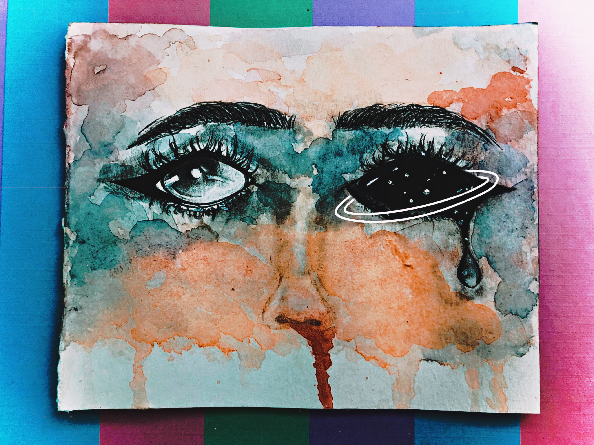
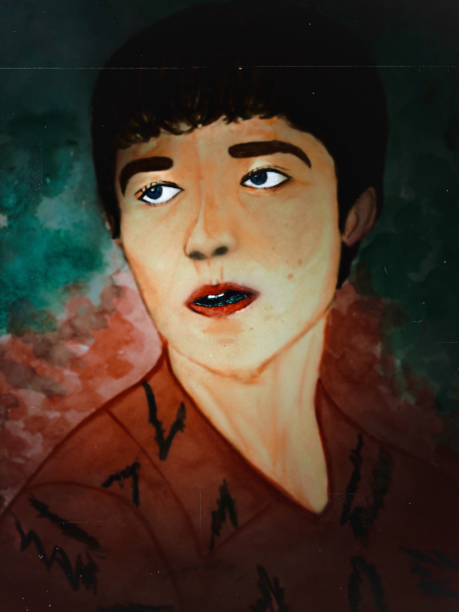

Meu Portfólio
Trabalhos
aqui
Arte com Aquarela
Neste trabalho utilizei como referência os olhos e os sentimentos que temos ao vê-los expressando algo. As cores e o modo de pintura da pele levam o observador a pensar no que a personagem já viveu e em quais dificuldades ela passou. O olho direito expressa a fadiga de alguém que se sente atordoado pelos desgostos do mundo (por isso a referência ao universo).

Um pouco de Expressionismo
sla o que
